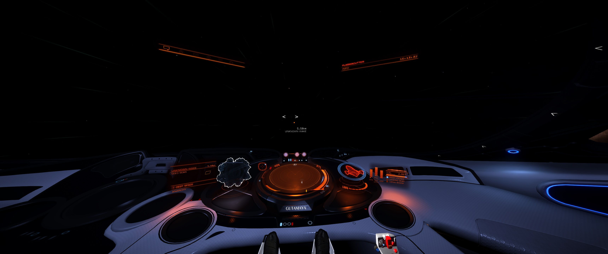

Cmdr Djtarjan reports on the Threadnought of discovering a Distress Call Threat 0 around Epsilon Arietis area (screenshots show 32 Nu Arietis) observing an Unknown Ship leaving the area and a damaged Corvette registration number FVU-85 as well as a Black Box. This is the first reported outside the immediate area of Maia.
Note: This Distress Call no longer appears to be present, in neither the 32 Nu Arietis system nor the Epsilon Arietis system – 20 Sep 3310.
A screenshot from the encounter (recovered via the Internet Archive Wayback Machine, as the original imgur album is now blocked in some regions):
